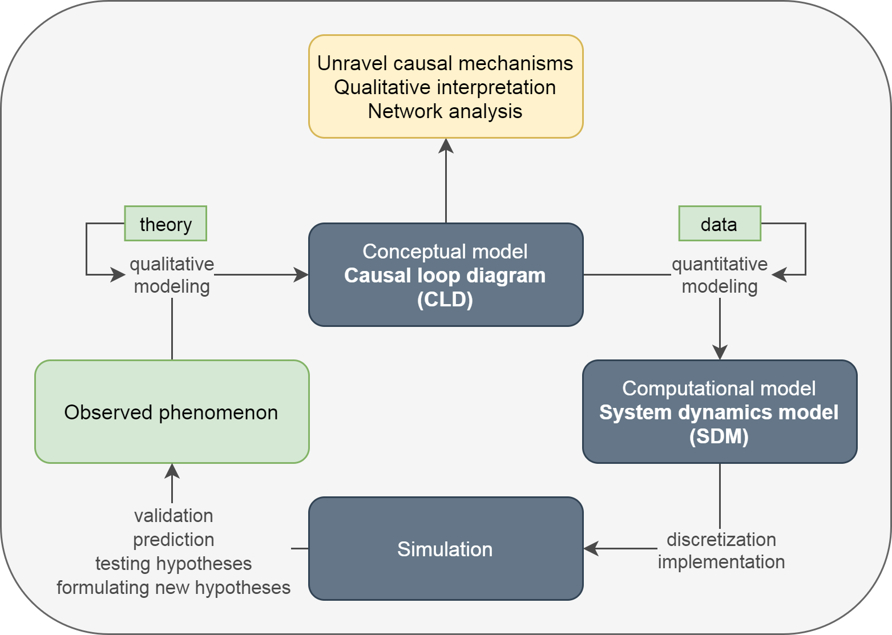
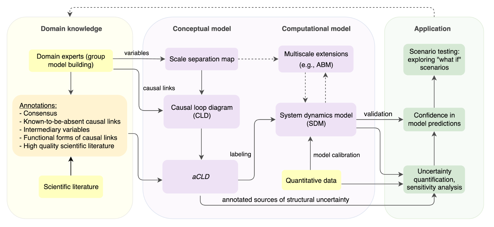

Complexity modeling
A birds eye view of the how and the why of computational modeling
Bas Chatel : bas.chatel@radboudumc.nl
Table of Contents
Introduction to complexity modeling
What is Complexity Science?
- Studies “the way in which large groups of individual components behave collectively by adapting to each other and the environment they create themselves”
- Aims to model the spatio-temporal dynamics of a system to explore its inherent patterns
- Necessary in order to explore, interpret, and manipulate dynamics of a system in silico
Fields of application
- Mental health
- Public health
- Planetary health
- Social dynamics
- Depression
- Obesity epidemic
- Climate change
- Immune system
Step 1: Conceptual modeling
- Explicitly state:
- Causal hypotheses
- Knowledge
- Assumptions
- Reason about:
- Cause- and- effect
Step 2: Computational modeling
All models are wrong, but some are useful. - George Box
Why/when do we model?
- Explore dynamics
- Manipulate the system itself
- Interpret resulting dynamics
- Reduce cost
- Ask "what if" questions
- Ethics
Why/when do we model?
Human brains are generally not reliable in predicting the long-term effects of interconnectedness, feedback loops, and nonlinearities

Problems in biopsychosocial domains
- Infeasibility of experimental research
- Difficulty to obtain rich data
- Rapid changes in underlying system
- Relevant variables on many spatial and temporal scales
- Unclear system boundaries
Step 3: Gaining confidence in your model
- Test the model with data
- Quantify uncertainty
The scientific cycle

A CLD about modeling with CLDs

Different types of models
Agent-based
Rule based models, often with spatial component:
Systems of Ordinary Differential Equations
Uncertainty
The stuff that we're not certain about
- Types of uncertainty:
- Topology
- Equations (Parameter values)
- Measuring methods
- Etc.,
- If ignored:
- Creates bias
- Overstates predictive power
- Possibly leading to wrong conclusions
It's all about confidence
- To increase confidence is to reduce uncertainty
- Confidence in model topology
- Confidence in model predictions
- Confidence in model Validity
Questions?
Any uncertainties you'd want to share?